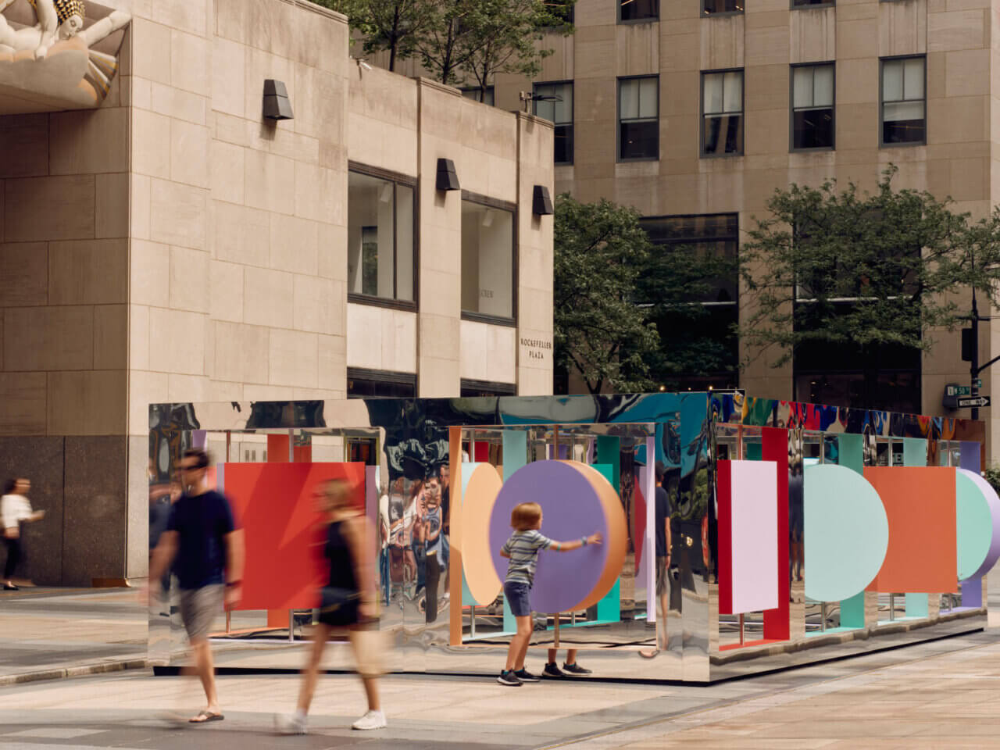
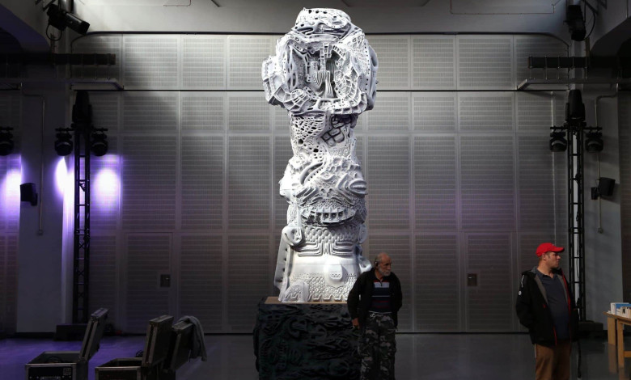
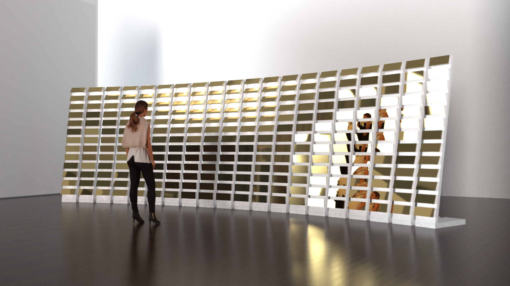

인공지능 활용 입체조형작품의 유형 및 표현 특성 연구
논문 핵심 구조와 대표 사례를 발표 형식으로 재구성한 HTML 슬라이드
인공지능 활용 입체조형작품의 유형 및 표현 특성 연구
A Study on the Types and Expressive Characteristics of Three-Dimensional Artworks Using Artificial Intelligence
초록
국문 초록
(연구배경 및 목적) 예술 창작에서 인공지능의 활용은 텍스트와 평면 이미지를 넘어 조각·설치 등 입체조형의 영역으로 확장되고 있으며, 이미지 기반 3D 형상 생성, 머신러닝 기반 형상 생성, 디지털 제작, 실시간 반응형 시스템과 결합하고 있다. 이러한 확장에도 불구하고 입체조형작품의 창작과정에서 인공지능이 활용된 시점에 따라 작품의 표현이 어떻게 달라지는가를 분석한 연구는 부족한 실정이다. 본 연구는 인공지능 활용 입체조형작품 사례를 중심으로, 창작과정에서의 AI 활용 시점에 따른 작품 유형과 표현 특성을 분석하는 데 목적이 있다.
(연구방법) 본 연구는 인공지능 활용 과정이 확인되는 입체조형작품을 대상으로, 작가 및 기관 공식 자료, 미술관·갤러리 전시 자료, 학술 논문을 통해 사례를 수집하였다. 입체조형성·AI 활용의 확인 가능성·출처 신뢰도·유형 간 비교 가능성을 기준으로 대표 사례를 선정하였으며, 창작과정을 발상, 형상 표현, 전시 운영의 세 시점으로 구분하여 발상 보조형, 형상 생성형, 전시 운영형의 세 유형으로 분류하였다. 각 유형의 대표 사례로 Wade and Leta의 《Reflection Point》(2025), Michael Hansmeyer의 《Digital Grotesque III》(2022), BREAKFAST의 《Carbon Wake》(2025)를 선정하여 창작에서 AI 활용과 표현 특성을 분석하였다.
(결과) 발상 보조형은 AI 시안이 작가의 매체 선택과 형상 구상에서 다양한 탐색의 도구로 활용되었으며, 최종 형상의 결정과 시공은 작가가 주도하였다. 형상 생성형은 머신러닝 알고리즘이 고전 양식을 변형·확장하여 작가가 직접 표현하기 어려운 형상과 새로운 표면 질감을 작품의 형상으로 산출하였으며, 디지털 제작 공정을 통해 물질화되었다. 전시 운영형은 AI가 외부 데이터와 관람자의 반응을 작품의 운동 상태로 지속적으로 변환하였으며, 작가는 시스템 구조와 운영 규칙의 설계를 담당하였다. 이러한 차이는 인공지능이 창작과정의 어느 시점에 활용되는가에 따라 작품의 표현과 작가의 역할이 다르게 나타남을 보여준다.
(결론) 본 연구는 입체조형작품에서 인공지능의 활용을 기술의 새로움이 아니라 창작과정 안에서 활용되는 시점이라는 관점에서 분석하였다. 이 관점에서 인공지능은 작가의 신체적 행위를 대체하는 것이 아니라 활용 시점에 따라 서로 다른 표현 가능성을 여는 도구로 작동하였으며, 발상 시점에서는 시각적 탐색의 폭을 확장하고, 형상 표현 시점에서는 직접 표현하기 어려운 형상과 새로운 표면 질감을 구현하며, 전시 시점에서는 작가의 역할을 직접 표현에서 선택과 기획으로 이동시켰다. 본 연구는 인공지능 활용 입체조형작품 연구가 미비한 시점에서 활용 시점에 따른 작품 유형과 표현 특성을 사례 기반으로 정리함으로써, 후속 연구를 위한 기초 자료와 입체조형 분야의 AI 활용 논의를 확장하는 학술적 자료를 제공한다.
Keywords 인공지능, 입체조형작품, AI 활용 시점, 표현 특성, 유형 분류
English Abstract
(Background and Purpose) The use of artificial intelligence (AI) in art has extended beyond text and two-dimensional imagery into three-dimensional practices such as sculpture and installation, converging with image-based 3D form generation, machine-learning-based form generation, digital fabrication, and real-time reactive systems. Despite this expansion, prior research has paid insufficient attention to how the expression of three-dimensional artworks differs according to the stage of the creative process at which AI is used. This study analyzes the types and expressive characteristics of three-dimensional artworks using AI, focusing on the stage of AI use within the creative process.
(Method) The study examined three-dimensional artworks whose AI involvement is verifiable, with cases collected from artist and institutional websites, museum and gallery materials, and academic literature. Representative cases were selected based on sculptural quality, verifiability of AI use, source reliability, and comparability across types. The creative process was divided into ideation, form realization, and exhibition operation, and the cases were classified into the Ideation-Assistance Type, the Form-Generation Type, and the Exhibition-Operation Type. Wade and Leta's Reflection Point (2025), Michael Hansmeyer's Digital Grotesque III (2022), and BREAKFAST's Carbon Wake (2025) were selected as representative cases of each type, and analyzed in terms of AI use and expressive characteristics.
(Results) In the Ideation-Assistance Type, AI proposals expanded the artist's visual exploration in choosing medium and form, while the determination of the final form and its fabrication were led by the artist. In the Form-Generation Type, a machine-learning algorithm transformed and expanded a classical style, producing forms and surface textures difficult for the artist to realize directly, which were materialized through digital fabrication. In the Exhibition-Operation Type, AI continuously translated external data and viewer responses into the kinetic state of the work, while the artist was responsible for designing the system structure and operational rules. These differences show that the work's expression and the artist's role vary according to the stage at which AI is used.
(Conclusions) This study proposed a perspective in which AI in three-dimensional artistic creation is understood not by the novelty of the technology, but by the stage of the creative process at which AI is used. From this perspective, AI does not replace the artist's physical act but, depending on the stage of use, opens different possibilities of expression: expanding visual exploration in ideation, realizing forms and novel surface textures that are difficult to express directly, and shifting the artist's role from direct execution toward selection and orchestration in exhibition operation. At a time when research on AI-based three-dimensional artworks remains limited, this study organizes their types and expressive characteristics on a case basis, providing a foundational reference for subsequent research and broadening the discussion of AI use in three-dimensional art.
Keywords Artificial Intelligence, Three-Dimensional Artwork, Stage of AI Use, Typology, Expressive Characteristics
1. 서론
1.1 연구의 배경과 목적
예술 창작에서 인공지능의 활용은 평면 이미지와 영상 생성을 넘어 조각·설치 등 입체조형의 영역으로 확장되고 있다. 뉴욕현대미술관은 Refik Anadol의 《Unsupervised》(2022-2023)를 인공지능 알고리즘과 실시간 디지털 애니메이션, 사운드로 구성된 데이터 조각으로 제시하였고(Museum of Modern Art, 2022)1), 국내에서도 리움미술관의 필립 파레노 개인전 《보이스》(2024)가 외부 데크의 센서 설치 〈막(膜)〉이 수집한 환경 데이터를 내부 인공지능 작품 〈∂A〉의 음성 생성 및 전시 운영에 연동하는 방식으로 구현되었다(Leeum Museum of Art, 2024)2). 이처럼 국제·국내 주요 미술관에서 인공지능 기반 입체조형 작품이 본격적인 전시로 다루어지고 있다.
기술적으로는 머신러닝 기반 시각 컴퓨팅 기술의 발전(Po, et al., 2024)과 텍스트·이미지를 형상으로 변환하는 생성형 AI의 확산(Feuerriegel, et al., 2024)이 작가가 발상에서 형상 산출에 이르는 과정에 인공지능을 활용할 수 있는 기반을 제공하고 있으며, 3D 프린팅·로봇 절삭 등 디지털 제작 공정은 인공지능이 산출한 형상을 물리적으로 구현하고 있다. ↗ link
이러한 변화에 따라 인공지능과 입체조형의 결합을 다룬 학술 연구도 등장하고 있다. 본 연구와 관련된 주요 선행연구는 〈표 1〉↗과 같다.
| 연구자(연도) | 논문명 | 핵심 내용 |
|---|---|---|
| Ge, et al. (2019) | Creative sketch generation | 머신러닝으로 3D 포인트 클라우드 생성 후 3D 프린팅 설치 작품으로 구현 |
| Guljajeva, & Canet Sola, (2023) | AI-Aided ceramic sculptures: Bridging deep learning with materiality | 텍스트·3D 모델 기반 딥러닝 생성물을 세라믹 3D 프린팅으로 물질화 |
| Atairu, (2024) | Reimagining Benin Bronzes using generative adversarial networks | GAN을 활용해 베냉 청동 조각의 형상 재해석 및 3D 프린팅 구현 |
| 봉욱호, 정정호, (2024) | 조각 예술 창작에서 AI 기술과 전통적 방법의 적용 및 영향에 대한 비교 연구 | AI 조각·전통 조각 각 5점을 네 요인으로 비교 분석 |
위 선행연구는 AI 형상 생성과 물질화(Ge, et al., 2019; Guljajeva, & Canet Sola, 2023), AI 활용 조각의 형상 재해석(Atairu, 2024), AI 조각과 전통 조각의 비교(Feng, & Jung, 2024)를 다루었으나, 인공지능이 입체조형의 창작과정 가운데 어느 시점에 활용되는가에 따라 작품 유형과 표현 특성이 어떻게 달라지는가를 사례 기반으로 고찰한 연구는 제한적이다. 이에 본 연구는 인공지능 활용 입체조형작품 사례를 중심으로, 창작과정에서의 AI 활용 시점에 따른 작품 유형과 표현 특성을 분석함으로써, 향후 AI를 활용한 입체조형 표현 연구의 기초자료를 제공하는 데 목적이 있다.
1.2 연구의 범위 및 방법
본 연구의 범위는 인공지능 활용 과정이 확인되는 입체조형작품으로 한정한다. 분석 대상은 물리적 실체 또는 공간(현실·가상)의 점유성을 갖는 조형 작품이다. 사례는 작가 및 기관 공식 자료, 미술관·갤러리 전시 자료, 학술 논문을 통해 141건을 1차 수집하였으며, 이 가운데 작가·기관의 1차 자료로 인공지능 활용 도구와 활용 시점이 확인되는 120건을 검토 대상으로 설정하였다. 사례 선정 기준은 입체조형성, 인공지능 활용의 확인 가능성, 출처 신뢰도, 유형 간 비교 가능성이다.
연구의 방법으로는 창작과정을 발상, 형상 표현, 전시 운영의 세 시점으로 구분하여 사례를 발상 보조형, 형상 생성형, 전시 운영형의 세 유형으로 분류한다. 각 유형의 대표 사례 1건에 대해 작품 정보, 작품 개요, AI 활용 도구, 창작에서 AI 활용, 표현 특성을 중심으로 분석을 진행하며, 이를 통해 인공지능이 창작과정의 어느 시점에 활용되는가에 따라 작품의 표현이 어떻게 달라지는가를 도출한다. 분석틀은 〈표 2〉↗와 같다.
| 분석 항목 | 내용 |
|---|---|
| 창작 유형 | 발상 보조형 / 형상 생성형 / 전시 운영형 |
| 작품 정보 | 작품명, 작가, 제작·전시 연도, 전시 기관 |
| 작품 개요 | 매체, 규모, 전시 맥락 |
| 대표 이미지 | 작품의 형태와 전시 방식을 보여주는 도판 |
| AI 활용 도구 | 작품에 활용된 인공지능 도구와 시스템 |
| 창작에서 AI 활용 | 인공지능이 활용된 시점과 방식 |
| 표현 특성 | 형상·물질성·공간 경험 차원의 표현 특성 |
---
2. 이론적 배경
2.1 인공지능의 창작 활용
인공지능은 입력된 정보를 바탕으로 예측, 콘텐츠, 추천, 의사결정 등의 출력을 생성하고, 이를 통해 물리적 또는 가상 환경에 영향을 미칠 수 있는 기계 기반 시스템으로 이해할 수 있다(OECD, 2024). 현대의 많은 인공지능 시스템은 사람이 모든 규칙을 직접 입력하기보다, 데이터로부터 관계와 패턴을 학습하여 분석 모델을 구성하는 머신러닝에 기반한다. 이 가운데 딥러닝은 인공신경망을 활용하여 이미지, 언어, 음성, 3D 데이터와 같은 복합 정보를 처리하는 머신러닝의 한 방식이다(Janiesch, Zschech, & Heinrich, 2021). 생성형 인공지능은 이러한 머신러닝 및 딥러닝 기반 모델이 학습 데이터의 패턴을 바탕으로 텍스트, 이미지, 사운드 등 새로운 의미 있는 콘텐츠를 산출하는 방향으로 확장된 기술로 볼 수 있으며(Feuerriegel, et al., 2024), 최근 확산모델은 이미지와 영상뿐 아니라 3D 객체와 4D 장면 생성으로 적용 범위를 넓히고 있다(Po, et al., 2024). ↗ link
인공지능 기술의 창작에서의 활용은 고정된 결과물의 산출에 한정되지 않고, 환경 정보를 해석하여 작품의 상태를 변화시키는 방식으로도 활용된다. OECD(2019)는 인공지능 시스템을 센서, 운용 논리, 액추에이터의 관계로 설명하며, 센서가 환경의 원자료를 수집하고 운용 논리가 이를 처리하여 출력 결과를 액추에이터에 전달함으로써 환경의 상태에 영향을 미칠 수 있다고 보았다. 이러한 구조가 전시 공간에 적용될 경우, 관람자의 움직임, 소리, 위치, 환경 데이터 등은 알고리즘을 거쳐 영상, 사운드, 조명, 모터, 키네틱 구조 등의 변화로 전환된다.
이러한 기술은 작가의 창작 활동에 활용될 때 산출물의 종류와 작용 방식에서 서로 다른 양상으로 나타난다(Mazzone, & Elgammal, 2019). 생성형 모델은 텍스트·이미지·3D 형상 등의 산출물을 통해 작가의 시각적 발상과 형상 표현 과정에 관여하고, 환경 반응형 시스템은 외부 데이터와 관람자 반응을 작품의 운동·소리·빛의 변화로 전환하며 작품의 작동 자체에 관여한다.
2.2 입체조형작품의 이해
입체조형작품은 3차원 공간에서 물리적 실체 또는 공간 점유성을 갖는 조형 예술의 한 영역으로, 전통적으로 형상, 물질성, 공간 경험의 세 요소를 중심으로 논의되어 왔다(Read, 1961; Hopkins, 2003; Potts, 2000). 형상은 작품의 조형 구조와 형태적 읽힘을, 물질성은 재료가 질감·중량감·표면성을 통해 드러나는 방식을, 공간 경험은 오브제의 크기·배치·관람 동선에 따라 작품이 환경과 맺는 관계를 가리킨다. Krauss(1979)는 조각이 독립 오브제를 넘어 건축·경관·장소와의 관계 속에서 규정된다는 ‘확장된 영역(expanded field)’ 모델을 제시하였고, 이로써 입체조형의 범주는 설치 및 장소 특정 작품으로 확장되었으며, 최근에는 가상공간과 데이터 기반 반응형 환경으로까지 넓어지고 있다(Manovich, 2001). ↗ link
Krauss의 확장된 영역 모델은 조각이 더 이상 받침대 위의 독립된 오브제로 한정되지 않고, 건축·풍경·장소와의 관계 속에서 의미를 획득한다는 점을 강조한다. 이러한 관점은 작품과 환경의 관계가 입체조형 의미 형성의 핵심임을 보여주며, 입체조형의 분석이 작품 자체의 형상에 한정되지 않고 작품이 놓이는 공간과 관람자의 경험까지 포함해야 함을 시사한다. ↗ link
이를 바탕으로 본 연구에서 입체조형작품은 전통적 의미의 물질 조각에 한정되지 않으며, 관람자의 신체적 이동과 지각을 전제로 공간을 점유하고 환경과 관계를 형성하는 조형적 구조를 포함한다. 따라서 물리적 재료뿐 아니라 영상·LED·구동 장치 등의 물리적 출력 매체와 데이터·소프트웨어·가상공간 등의 비물질 요소 역시, 공간 점유성과 관람 경험을 구성하는 경우 본 연구의 입체조형 범주에 포함한다.
2.3 인공지능 활용 시점에 따른 유형
입체조형의 창작은 작가의 발상이 물질을 통해 공간 안에 놓이며 작품으로 표현되는 조형화(造形化)의 과정이다. 회화나 영상과 달리 입체조형은 작품이 놓이는 공간과의 관계 속에서 비로소 완성되며, 이때의 공간 경험은 작품의 의미 형성에 본질적으로 관여한다(Krauss, 1979; Potts, 2000). 인공지능은 이러한 조형화 과정 가운데 발상, 형상 표현, 전시 등 서로 다른 시점에 활용되며, 본 연구는 인공지능을 활용한 시점을 기준으로 작품 유형을 구분한다. ↗ link
발상 보조형은 AI 활용이 발상 시점에 머무는 경우로, 형상 표현과 전시는 작가의 전통 공정을 따른다. 형상 생성형은 AI가 형상 표현 시점까지 활용되는 경우로, 알고리즘이 산출한 형상이 디지털 제작 공정을 거쳐 조형물로 구현된다. 전시 운영형은 AI가 전시 시점까지 활용되는 경우로, 작품이 전시장에 놓인 이후에도 데이터와 관람자·환경에 반응하며 상태가 변화한다. 작품은 AI 활용이 가장 두드러진 시점의 유형으로 분류한다.
세 유형의 구분은 인공지능이 창작과정에 활용되는 폭의 차이를 드러낸다. 발상 보조형에서는 인공지능이 작가의 시각적 탐색을 보조하는 데 머무르며, 작품의 형상과 물질화는 작가의 손에서 결정된다. 형상 생성형에서는 인공지능이 작품의 형상 산출까지 관여하며, 작가의 역할이 산출물의 선별과 해석으로 이동한다. 전시 운영형에서는 인공지능이 작품의 운영까지 관여하며, 작가는 작품 자체가 아니라 작품이 작동하는 시스템의 구조를 설계한다. 따라서 유형 구분은 기술의 종류가 아니라 AI가 개입하는 시점과 그 개입이 형상·물질성·공간 경험에 일으키는 변화를 기준으로 하며, 이를 정리하면 〈표 3〉↗과 같다.
| 유형 | 조작적 정의 및 판별 기준 | 작가의 역할 |
|---|---|---|
| 발상 보조형 | AI가 발상·시각화 단계에서 형상 구상과 매체 탐색을 보조하나, 최종 형상과 물질화는 작가가 주도 | 조형 공정 전체를 주도 |
| 형상 생성형 | AI가 형상 또는 표면 구조 산출에 직접 관여하고, 그 결과가 디지털 제작을 통해 물질화 | AI 산출물의 선별·해석·물질화 |
| 전시 운영형 | AI가 전시 중 데이터와 관람자·환경 반응을 처리하여 작품의 운동·소리·빛·상태 변화에 지속 개입 | 전시 요소의 선택과 운영 조건 구성 |
3. 사례연구
본 장에서는 검토 사례 가운데 작가·기관 공식 자료로 AI 활용 도구와 개입 시점이 명확히 확인되고 각 유형의 판별 기준을 가장 뚜렷하게 보여주는 작품을 유형별 대표 사례 1건으로 선정하여 분석한다.
3.1 발상 보조형
본 사례는 Wade and Leta의 《Reflection Point》(2025)3)이다. 본 작품은 Google Labs와의 협업에서 생성형 AI 도구 Whisk4)가 발상 시점에 시각 시안 형성에 관여하였고, 형상 산출과 물질화는 작가의 설계와 시공으로 확정되었다. AI 활용이 발상 시점에 한정된 발상 보조형의 작동 양상이 확인된다. 본 사례의 분석은 〈표 4〉↗와 같다.
| 분석 항목 | 내용 |
|---|---|
| 창작 유형 | 발상 보조형 |
| 작품 정보 | Reflection Point / Wade and Leta / 2025 / 뉴욕 록펠러 센터 Center Plaza |
| 작품 개요 | 미러 미로형 공공 조형 설치. 4개 포털로 분할된 미러 미로 구조에 회전 가능한 그래픽 형태가 18개 벽에 배치. Google Labs와의 협업 프로젝트로 제작되어 록펠러 센터 공공 광장에 설치 |
| 대표 이미지 |  |
| AI 활용 도구 | Whisk (Google Labs 생성형 이미지 도구). 텍스트·이미지 프롬프트를 입력받아 시각 시안을 생성하는 도구 |
| 창작에서 AI 활용 | 발상 시점에 작가가 색채·구조 탐색을 위해 Whisk에 텍스트 프롬프트를 입력하여 다수의 시각 시안을 생성. Whisk가 색채 탐색 과정에서 우연히 제안한 미러 표면을 작가가 작품의 핵심 매체로 채택. 채택된 매체와 색채 조합을 바탕으로 형상 설계와 구조 결정, 산업 재료 시공은 작가가 주도하여 진행 |
| 표현 특성 | • 4개 포털로 분할된 미러 미로 구조에 회전 가능한 그래픽 형태가 18개 벽에 배치되어, 관람자 동선에 따라 보이는 형태가 끊임없이 재구성됨 • 미러 면이 작품의 주재료로 채택된 결정은 Whisk가 색채 탐색 과정에서 우연히 제안한 시안에서 비롯됨. AI 시안이 작가의 매체 선택을 바꿈 • 미러 알루미늄 복합 패널·합판·스테인리스 등 산업 재료에 9개 보색 색조를 18개 벽에 중복 없이 페어링 • AI가 제안하여 채택된 미러 표면이 도시의 빛·하늘·주변 건축을 받아들이며, 재료의 표정이 외부 환경에 따라 매 순간 달라지는 가변적 물질성으로 작동 • 록펠러 센터 Center Plaza의 공공 도시 공간을 점유하며, 작품 안으로 들어가는 관람자가 작품의 일부가 됨 • AI 시안에서 비롯된 미러 면이 주변 풍경과 관람자를 반사하여, 작품이 도시의 풍경과 관람자를 표면에 받아 안는 구조로 작동 |
3.2 형상 생성형
본 사례는 Michael Hansmeyer의 《Digital Grotesque III》(2022)5)이다. 작가가 개발한 머신러닝 알고리즘이 고딕 그로테스크 양식을 컴퓨테이셔널로 확장하여 형상을 직접 산출하고, 그 결과가 모래 기반 바인더젯 3D 프린팅을 거쳐 5미터 모노리스 조각으로 물질화되었다. AI가 형상 산출 시점까지 활용되고 작가가 알고리즘 설계와 결과 선별을 담당한 형상 생성형의 작동 양상이 확인된다. 본 사례의 분석은 〈표 5〉↗와 같다.
| 분석 항목 | 내용 |
|---|---|
| 창작 유형 | 형상 생성형 |
| 작품 정보 | Digital Grotesque III / Michael Hansmeyer / 2022 / BMW Art Club, Warsaw |
| 작품 개요 | 약 5m 높이·약 2.5톤의 3D 프린팅 모노리스 조각. 단일 구조물 표면 전체가 컴퓨테이셔널 알고리즘으로 산출된 무한 변주 프랙탈 장식 패턴으로 채워짐. |
| 대표 이미지 |  |
| AI 활용 도구 | 작가 자체 개발 머신러닝 알고리즘 / 모래 기반 바인더젯 3D 프린팅 공정 |
| 창작에서 AI 활용 | 형상 표현 시점에 머신러닝 알고리즘이 양식을 무한 프랙탈로 확장하여 형상을 산출. 작가는 알고리즘 설계와 형상 표현 결과물 선별 담당 |
| 표현 특성 | • 5m 모노리스 표면이 무한 변주된 프랙탈 장식 패턴으로 채워짐. 인간이 직접 새기기 어려운 표면 디테일이 작품 전체에 분포 • 머신러닝 알고리즘이 고딕 그로테스크라는 고전 양식을 컴퓨테이셔널 변주로 확장하여 전통적 표현이 도달하기 어려운 형상을 산출 • AI 산출 형상을 물질화하는 3D 프린팅 모래에 레진·페인트 코팅이 적용된 매체. 극미세 적층이 만드는 표면 질감은 알고리즘 산출과 자동 제작의 결합으로만 도달 가능한 영역 • 알고리즘 연산과 바인더젯 헤드의 적층 궤적이 표면에 남아, 작품 표면 자체가 알고리즘과 자동 제작의 "필체"가 됨 • 알고리즘 산출 형상을 자동 제작 공정으로 물질화한 결과 5m 수직 스케일과 약 2.5톤의 중량을 구현하여, 전시 공간에 수직적·구심적 관람 동선을 형성 • 동일 양식에서 변주된 360도 비디오 인스톨레이션과 결합되어, 관람자가 결과물과 알고리즘 생성 과정을 동시에 경험 |
3.3 전시 운영형
본 사례는 BREAKFAST의 《Carbon Wake》(2025)6)이다. AI 시스템이 100여 개 도시의 실시간 에너지 데이터를 분석·선별하여 키네틱 타일의 운동 패턴에 반영하며, 관람자의 접근에도 반응한다. 작품의 형상은 전시 기간 내내 매 순간 달라진다. AI가 전시 시점까지 활용되어 작품의 상태를 지속적으로 산출하는 전시 운영형의 작동 양상이 확인된다.
| 분석 항목 | 내용 |
|---|---|
| 창작 유형 | 전시 운영형 |
| 작품 정보 | Carbon Wake / BREAKFAST / 2025 / Art Dubai Digital7) |
| 작품 개요 | 약 7m 폭의 벽면 키네틱 설치 |
| 대표 이미지 |  |
| AI 활용 도구 | 자체 개발 AI 분석 시스템 / 실시간 에너지 데이터 / 모터 구동 키네틱 시스템 |
| 창작에서 AI 활용 | 발상·형상 표현 시점에 작가가 작품의 시스템 구조(키네틱 격자 배열)와 데이터 매핑 규칙(에너지 데이터를 표면 운동으로 변환하는 알고리즘)을 설계. 전시 시점에 AI 시스템이 100여 개 도시의 실시간 에너지 데이터를 분석·선별하여 표면 운동으로 변환 |
| 표현 특성 | • 약 7m 폭의 벽면에 금색 미러 스테인리스 키네틱 타일이 격자로 배열. 화석연료 사용량이 증가하면 타일이 솟아오르고 청정에너지 비중이 증가하면 가라앉는 운동으로 외부 데이터가 작품의 형상으로 직접 번역됨 • 고정된 최종 형상이 존재하지 않으며, 작가가 결정하는 것은 형상 자체가 아니라 형상이 산출되는 규칙 • 금속 표면이 빛을 반사하는 조각의 매체이자 데이터를 가시화하는 화면으로 동시에 작동 • 손작업·기계 가공의 물리적 흔적은 배경으로 물러나고, 데이터·소프트웨어·기계 구동이 표면 운동을 통해 가시화됨 • 관람자가 작품 가까이 다가가면 그 접근이 운동 패턴에 반영되어, 관람 행위가 작품의 표현에 직접 참여 • 전시 기간 내내 같은 순간이 두 번 존재하지 않으며 매번 다른 경험을 제공 |
3.4 유형별 상호 분석
앞서 살핀 세 사례를 통해 AI 활용 시점에 따라 작품의 표현이 어떻게 다르게 나타나는가를 확인할 수 있었다. 유형별 표현 특성을 정리하면 〈표 7〉↗과 같다.
| 유형 | AI 활용 시점 | 형상 | 물질성 | 공간 경험 |
|---|---|---|---|---|
| 발상 보조형 | 발상·시각화 | AI 시안이 형상 구상의 가능성을 확장 | AI 시안이 매체 선택에 영향 | 반사면을 통해 도시와 관람자가 작품에 포함 |
| 형상 생성형 | 형상 생성·변환 | 알고리즘이 고밀도 형상과 표면 구조를 산출 | 3D 프린팅과 코팅으로 AI 산출물이 물질화 | 대형 수직 구조와 360도 관람 동선 형성 |
| 전시 운영형 | 전시 운영 | 데이터와 관람자 반응에 따라 형상 상태가 변화 | 금속 타일·모터·데이터 시스템이 결합 | 관람 행위가 작품의 운동 패턴에 참여 |
〈표 7〉에서 보듯이 AI 활용 시점이 발상에서 형상 표현, 다시 전시로 확장됨에 따라 작품의 표현 특성은 형상·물질성·공간 경험의 차원에서 다르게 나타난다. 형상은 작가가 결정한 고정 형태에서 알고리즘 산출과 실시간 갱신으로, 물질성은 정적 재료에서 적층 질감과 데이터 가시화 표면으로, 공간 경험은 공간 점유에서 관람 동선과 관람자 참여로 확장된다.
이러한 변화는 AI 활용 입체조형이 작가 한 사람의 표현 행위를 넘어, 알고리즘·제작 기술·운영 시스템과 함께 작동하는 작업 방식으로 펼쳐지고 있음을 보여준다. 특히 전시 운영형에 이르면 작품의 형상은 더 이상 제작 완료 시점에 고정되는 결과물이 아니라 데이터 입력과 관람자 반응에 따라 갱신되는 상태값으로 작동하며, 입체조형의 형상성은 고정된 형태가 아니라 시간적으로 변동하는 관계적 형상으로 전환된다.
4. 결론
본 연구는 AI가 창작과정의 어느 시점에 활용되는가를 기준으로 인공지능 활용 입체조형작품의 유형을 분류하고 각 유형의 표현 특성을 분석하였다. 이를 위해 발상 보조형, 형상 생성형, 전시 운영형의 세 유형을 도출하고, 각 유형의 대표 사례인 Wade and Leta의 《Reflection Point》(2025), Michael Hansmeyer의 《Digital Grotesque III》(2022), BREAKFAST의 《Carbon Wake》(2025)를 검토하였다.
본 연구는 AI 활용을 기술의 새로움이나 도구의 차이로 보지 않고, 창작과정 안에서 AI가 활용되는 시점이라는 관점을 제시하였다. 이 관점으로 사례를 분석한 결과, AI는 작가의 신체적 행위를 대체하는 것이 아니라 활용되는 시점에 따라 서로 다른 표현 가능성을 여는 도구로 작동함을 확인하였다. 발상 보조형에서는 AI 시안이 작가의 매체 선택과 형상 구상에서 탐색의 도구로 활용되었으며, 형상 생성형에서는 작가가 표현하기 어려운 형상과 새로운 표면 질감이 작품의 형상으로 구현되었다. 전시 운영형에서는 작가의 역할이 직접적인 형상 제작에 한정되지 않고, 형상·매체·공간 연출·관람 상황·데이터 등 전시를 구성하는 요소들을 선택하고 기획하는 위치로 확장되었다. 이러한 발견은 입체조형작품에서 인공지능이 활용됨에 따라 작가의 역할과 작품의 표현 방식이 새롭게 재편되고 있음을 보여준다. 특히 전시 운영형에 이르면 입체조형의 형상성은 고정된 형태가 아니라 시간적으로 변동하는 관계적 형상으로 전환되며, 이는 작품의 형상 개념 자체가 인공지능 활용 시점에 따라 재편되고 있음을 시사한다.
본 연구는 인공지능 활용 입체조형작품 연구가 아직 충분히 축적되지 않은 상황에서, AI 활용 시점에 따른 작품 표현의 차이를 사례 분석을 통해 정리했다는 점에서 의미가 있다. 기존 선행연구가 AI 형상 생성과 물질화, AI 조각과 전통 조각의 비교에 초점을 두었다면, 본 연구는 AI 활용 시점을 기준으로 형상·물질성·공간 경험 차원의 표현 특성과 작가 역할의 변화를 비교했다는 점에서 차별성을 갖는다. 학술적 측면에서 본 연구는 인공지능 활용 입체조형이라는 신생 영역에 활용 시점이라는 분석 차원을 제시함으로써 후속 연구를 위한 분석 기반을 마련하였다. 실천적 측면에서는 본 연구의 유형 분류가 인공지능을 활용한 입체조형 작업의 참고 자료로 기능할 수 있다.
한편 본 연구는 인공지능이 활용된 시점을 기준으로 작품 유형을 구분하였으나, 실제 작품에서는 발상·형상 표현·전시의 여러 시점에 인공지능이 함께 활용되는 경우가 있으며, 본 연구는 그중 가장 두드러진 시점을 기준으로 유형을 결정하였다. 따라서 본 연구의 분류는 인공지능 활용의 다층적 양상을 모두 포괄하지 못하는 한계가 있다. 따라서 후속 연구에서는 창작과정의 AI 활용 시점뿐 아니라 인공지능 활용 결과물을 기준으로 보다 많은 사례를 다루는 분석이 필요하다.
References
Atairu, M., (2024). Reimagining Benin Bronzes using generative adversarial networks. AI & Society, 39(1), 91-102.
Feng, Yuhao, & Jung, Jungho, (2024). A comparative study on the application and impact of AI technology and traditional methods in sculpture art creation. Journal of the Korea Contents Association, 24(2), 42-56.
Feuerriegel, S., Hartmann, J., Janiesch, C., & Zschech, P., (2024). Generative AI. Business & Information Systems Engineering, 66(1), 111-126. ↗ link
Ge, S., Mishra, V., Li, C. L., Wang, H., & Jacobs, D., (2019). Creative sketch generation. Proceedings of the 25th International Symposium on Electronic Art (ISEA 2019).
Guljajeva, V., & Canet Sola, M., (2023). AI-Aided ceramic sculptures: Bridging deep learning with materiality. In Artificial Intelligence in Music, Sound, Art and Design (EvoMUSART 2023). Lecture Notes in Computer Science, vol 13988, 357-371. Cham: Springer.
Hopkins, R., (2003). Sculpture. In J. Levinson (Ed.), The Oxford Handbook of Aesthetics, 572-582. New York: Oxford University Press.
Janiesch, C., Zschech, P., & Heinrich, K., (2021). Machine learning and deep learning. Electronic Markets, 31(3), 685-695. ↗ link
Krauss, R., (1979). Sculpture in the expanded field. October, 8, 30-44. ↗ link
Manovich, L., (2001). The Language of New Media. Cambridge, MA: MIT Press.
Mazzone, M., & Elgammal, A., (2019). Art, creativity, and the potential of artificial intelligence. Arts, 8(1), 26.
OECD, (2019). Scoping the OECD AI principles: Deliberations of the Expert Group on Artificial Intelligence at the OECD (AIGO). OECD Digital Economy Papers, No. 291. Paris: OECD Publishing.
OECD, (2024). Explanatory memorandum on the updated OECD definition of an AI system. OECD Artificial Intelligence Papers, No. 8. Paris: OECD Publishing. ↗ link
Po, R., Wang, Y., Golyanik, V., Aberman, K., Barron, J. T., Bermano, A., Chan, E., Dekel, T., Holynski, A., Kanazawa, A., Liu, C. K., Liu, L., Mildenhall, B., Nießner, M., Ommer, B., Theobalt, C., Wonka, P., & Wetzstein, G., (2024). State of the art on diffusion models for visual computing. Computer Graphics Forum, 43(2), e15063. ↗ link
Potts, A., (2000). The Sculptural Imagination: Figurative, Modernist, Minimalist. New Haven: Yale University Press.
Read, H., (1961). The Art of Sculpture (2nd ed.). Bollingen Series XXXV-3. New York: Pantheon Books.
Endnotes
1) The Museum of Modern Art, (2022). Refik Anadol: Unsupervised [Exhibition: Nov 19, 2022–Oct 29, 2023]. New York: MoMA. https://www.moma.org/calendar/exhibitions/5535 : (May 25, 2026)
2) Leeum Museum of Art, (2024). Philippe Parreno: VOICES [Exhibition: Feb 28–Jul 7, 2024]. Seoul: Leeum Museum of Art. https://www.leeumhoam.org/leeum/exhibition/76 : (May 25, 2026)
3) Wade and Leta, (2025). Reflection Point [Artwork page]. https://wadeandleta.com/works/reflection-point : (May 25, 2026)
4) Google Labs, (2025). Whisk x Wade and Leta: Reflection Point collaboration [Project page]. Google. https://blog.google/technology/google-labs/reflection-point-ai-sculpture/ : (May 25, 2026)
5) Hansmeyer, M., (2022). Digital Grotesque III [Artwork page]. https://michael-hansmeyer.com/digital-grotesque-III : (May 25, 2026)
6) BREAKFAST, (2025). Carbon Wake [Artwork page]. https://breakfaststudio.com/breakfast-to-unveil-landmark-ai-driven-kinetic-sculpture-at-art-dubai-2025 : (May 25, 2026)
7) Art Dubai, (2025). Breakfast's “Carbon Wake” artwork brings global energy to life [Art Dubai Digital 2025, Madinat Jumeirah, Apr 16–20]. Dubai: Art Dubai. https://www.artdubai.ae/blog/breakfasts-carbon-wake-artwork-brings-global-energy-to-life/ : (May 25, 2026)
사진1 출처: Wade and Leta, (2025). Reflection Point [Artwork page]. https://wadeandleta.com/works/reflection-point
사진2 출처: Hansmeyer, M., (2022). Digital Grotesque III [Artwork page]. https://michael-hansmeyer.com/digital-grotesque-III
사진3 출처: BREAKFAST, (2025). Carbon Wake [Artwork page]. https://breakfaststudio.com/breakfast-to-unveil-landmark-ai-driven-kinetic-sculpture-at-art-dubai-2025
작품 아카이브 150건
인공지능을 활용한 입체조형·설치·공간·공공미술 관련 작품자료 150건입니다. 각 항목은 논문 활용등급과 세분화 점수순으로 정렬되며, 이미지와 함께 작품명, 작가명, 제작연도, 재료/매체, 전시·설치장소, 개요, 유형판단, 추천 액션, 후보판단, 근거 링크를 한눈에 확인할 수 있도록 정리했습니다.